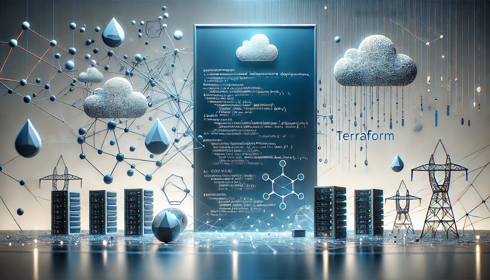

Project 2: Automated Deployment Pipeline
Project Overview: This project demonstrates the design, implementation, and deployment of a fully automated CI/CD (Continuous Integration/Continuous Delivery) pipeline that automates the software delivery process. The pipeline ensures that changes in the codebase are automatically tested, integrated, and deployed across multiple environments. The pipeline was built using various DevOps tools and practices, including Jenkins for automation, Docker for containerization, and Kubernetes for orchestration.
Key Technologies and Tools Used:
- Jenkins (Automation Server): Orchestrates the entire pipeline, monitoring GitHub for new commits, triggering builds, and running automated tests.
- Docker (Containerization): Ensures application consistency across environments, enables faster deployment times, and allows isolation between services.
- Kubernetes (Container Orchestration): Manages Docker containers across cloud environments, automates deployment, scaling, and ensures high availability and fault tolerance.
- Version Control (GitHub): GitHub integration with Jenkins triggers the pipeline with every new commit, ensuring the most recent version is always built and tested.
- Terraform (Infrastructure as Code): Defines cloud infrastructure as code, allowing quick environment setup and teardown with minimal manual intervention.
- Testing Framework (JUnit / Selenium): Executes automated unit and end-to-end tests as part of the pipeline to ensure code changes don't introduce bugs or regressions.
Project Process:
- Code Commit & Build: Developer commits code to GitHub, triggering Jenkins to check out the code and start the build process.
- Automated Testing: Jenkins runs unit and integration tests using JUnit and Selenium. If tests pass, the process moves to the next step; otherwise, developers are notified of errors.
- Containerization & Deployment: Jenkins pushes Docker images to a registry and deploys them to Kubernetes, which manages container orchestration.
- Monitoring & Logging: Tools like Prometheus and Grafana monitor application health and performance, while Fluentd collects logs for easy access and troubleshooting.
- Continuous Delivery: The pipeline ensures the application is always in a deployable state, automatically testing, building, and deploying code changes.
- Rollback Mechanism: Kubernetes supports rolling updates and can automatically roll back to previous stable versions if failures occur.
Benefits of the CI/CD Pipeline:
- Faster Time to Market: Automated pipelines reduce manual intervention and accelerate delivery cycles.
- Improved Code Quality: Continuous integration and automated testing catch bugs and vulnerabilities early, improving code quality.
- Scalability and Flexibility: Kubernetes provides a scalable and fault-tolerant environment, enabling the application to scale based on demand.
- Reduced Human Error: Automation eliminates manual deployment steps, ensuring consistent execution.